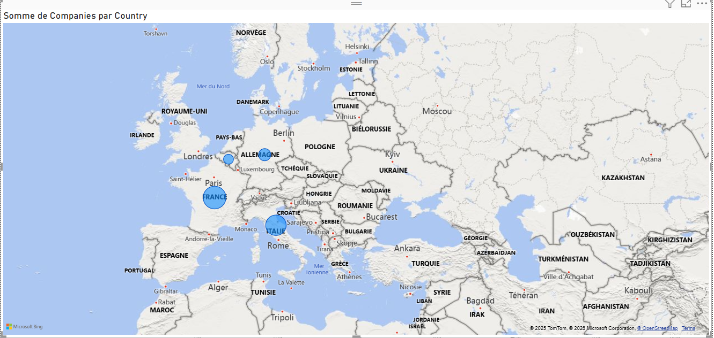
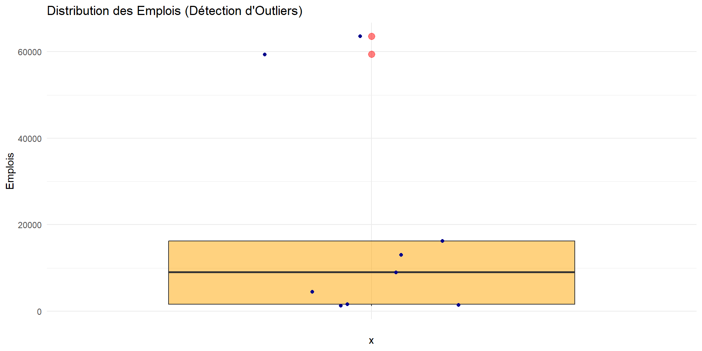

Ce projet vise à analyser l’impact des Investissements Directs Étrangers (IDE) sur la création d’emplois en Tunisie.
Questions clés : 1. Quels sont les principaux partenaires économiques ? 2. Quels secteurs créent le plus d’emplois ? 3. Existe-t-il une corrélation entre nombre d’entreprises et emplois ?
2. Problémes Rencontrés
Problème : Les fichiers Open Data (data.gov.tn) présentent des anomalies majeures (Format Wide, Espaces dans les chiffres, Fichiers corrompus).
Objectif ETL : Transformer ces données brutes en format exploitable pour l’analyse statistique.
3. Données PAYS : Avant Nettoyage
État des lieux : Le fichier est en format “Large” (Wide). Les pays sont étalés sur les colonnes.
library(tidyverse)library(readxl)# Lecture du fichier Brutif(file.exists("repartitionentreprisesetrangereparpays.xls")) { df_countries <-read_excel("repartitionentreprisesetrangereparpays.xls", skip =0)# Affichage des données BRUTESprint("--- APERÇU BRUT (Avant) ---")head(df_countries, 3)}
[1] "--- APERÇU BRUT (Avant) ---"
# A tibble: 3 × 6
Activités France Italie Allemagne Belgique Autres
<chr> <chr> <chr> <chr> <chr> <chr>
1 Industries agro-alimentaires 4 9 0 0 13
2 Industries des matériaux de construct… 2 13 2 1 5
3 Industries mécaniques et métallurgiqu… 67 46 2 2 27
# A tibble: 3 × 3
Sector Company_Type Jobs
<chr> <chr> <dbl>
1 Industries agro-alimentaires Totalement … 1053
2 Industries agro-alimentaires AUTRE 164
3 Industries des matériaux de construction céramique et verr… Totalement … 375
5. Fusion (Merge) des Données
Nous avons maintenant deux tables propres. Nous les fusionnons par Secteur.
# A tibble: 6 × 3
Sector Total_Companies Total_Jobs
<chr> <dbl> <dbl>
1 Industries agro-alimentaires 26 1217
2 Industries chimiques 111 9054
3 Industries des matériaux de construction céramique… 23 1393
4 Industries diverses 49 4560
5 Industries du bois, du liège et de l'ameublement 17 1605
6 Industries du cuir et de la chaussure 100 16253
6. Visualisation Power BI
A. Origine des Investisseurs

Prédominance des partenaires européens (France, Italie).
B. Analyse Sectorielle
Le Textile et l’Électrique dominent le marché de l’emploi.
Shapiro-Wilk normality test
data: stats_data$Total_Jobs
W = 0.71577, p-value = 0.002168
Résultat : p-value < 0.05. La distribution n’est pas normale.
8. Modèle de Régression
Corrélation entre nombre d’entreprises et emplois créés.
cor_val <-cor(stats_data$Total_Companies, stats_data$Total_Jobs, use ="complete.obs")print(paste("Coefficient de Corrélation :", round(cor_val, 4)))
[1] "Coefficient de Corrélation : 0.8429"
model <-lm(Total_Jobs ~ Total_Companies, data = stats_data)model$coefficients
(Intercept) Total_Companies
1844.3707 130.8642
Résultat (0.84) : Corrélation positive très forte.
Analyse de la Distribution
print("Génération du Boxplot...")
[1] "Génération du Boxplot..."
p2 <-ggplot(stats_data, aes(x ="", y = Total_Jobs)) +geom_boxplot(fill ="orange", alpha =0.5, outlier.color ="red", outlier.size =3) +geom_jitter(width =0.2, color ="darkblue") +# Points réelstheme_minimal() +labs(title ="Distribution des Emplois (Détection d'Outliers)",y ="Emplois" )print(p2)

Visualisation du Modèle
Interprétation :Ce graphique illustre notre modèle de régression.
On observe une tendance clairement linéaire et positive la dispersion des points bleus montre des disparités sectorielles sont beaucoup plus intensifs en main-d’œuvre que d’autres pour le même niveau d’investissement.
9. Conclusion
Pour conclure cette étude, l’analyse des données nous a permis de confirmer que l’investissement étranger est un moteur indéniable de l’emploi en Tunisie.
Nos tests statistiques montrent que l’augmentation du nombre d’entreprises s’accompagne systématiquement d’une création proportionnelle de postes. Ce lien est particulièrement visible dans les secteurs exportateurs, validant ainsi l’importance stratégique des partenaires européens (France, Italie) dans la dynamique économique locale.